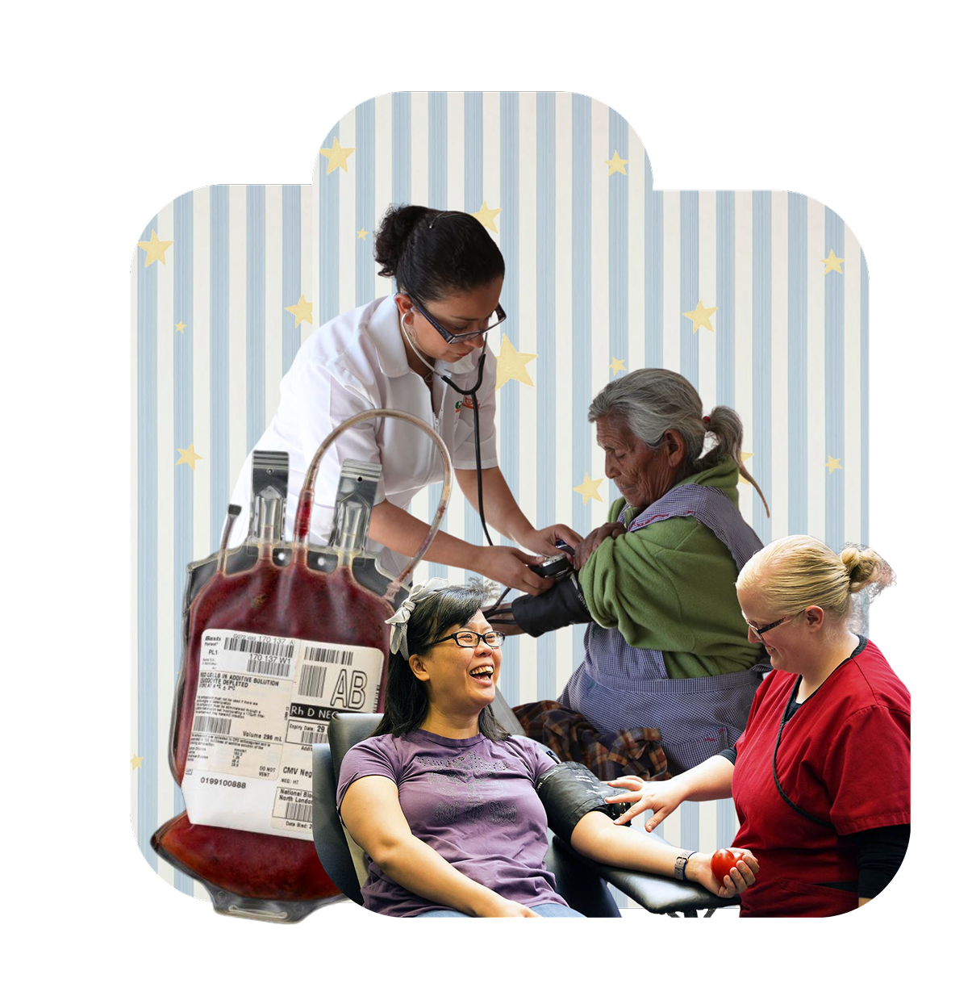
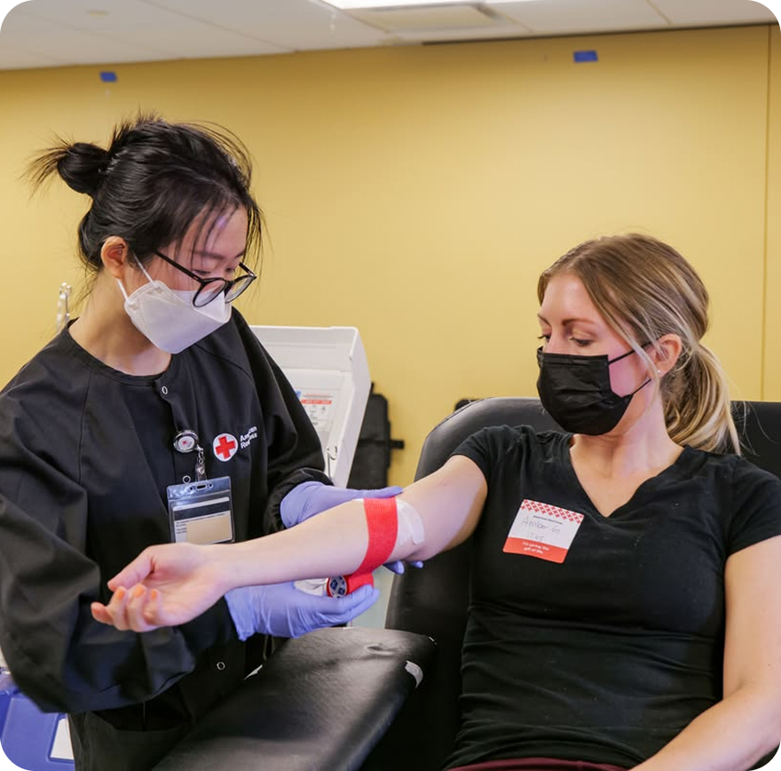
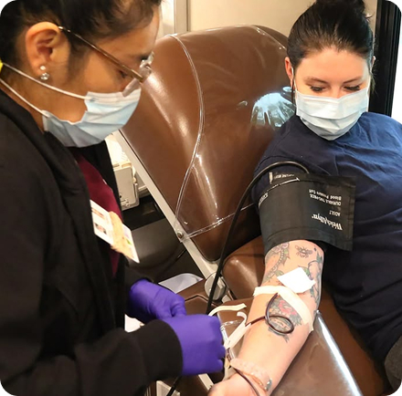
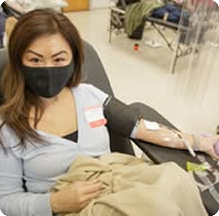
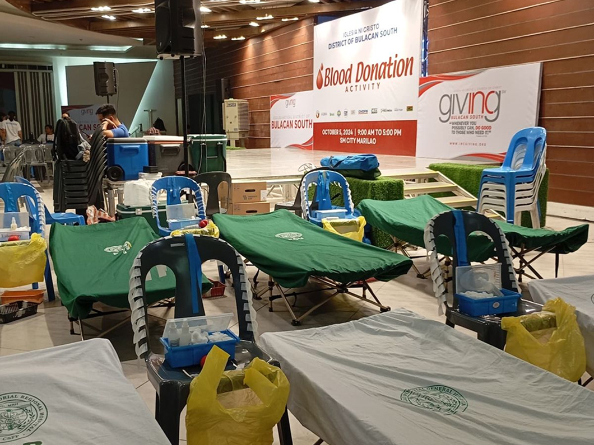

The standard, most flexible donation takes about 45 to 60 minutes total, with the blood draw lasting just 8 to 10 minutes. A single pint collects red cells, platelets, and plasma to support trauma victims, surgeries, and severe anemia patients. It is open to all blood types—especially O-negative—and you can donate every 56 days.

Using an automated machine, this process draws blood, collects vital clotting cells, and returns your red cells and plasma. The visit lasts about two hours—ideal for streaming a movie or relaxing—and directly aids cancer patients undergoing chemotherapy and major surgery recipients. Particularly needed from positive blood types (A+, B+, AB+, O+), platelets can be donated every 7 days.

This targeted donation collects a concentrated, double dose of red blood cells while returning your platelets and plasma with hydrating fluids. Taking roughly 60 to 75 minutes, it is most effective for O, A-negative, and B-negative donors to treat newborn transfusions and emergency trauma. Because two units are collected, donations are spaced 112 days apart.

HemoPulse bridges the gap between willing donors and community blood drives. Our platform simplifies the entire giving journey: register in minutes, discover verified donation campaigns near you, and effortlessly monitor your personal donation history and eligibility milestones. By keeping track of live blood supply needs in your area, you always know when your specific blood type can make the greatest difference.